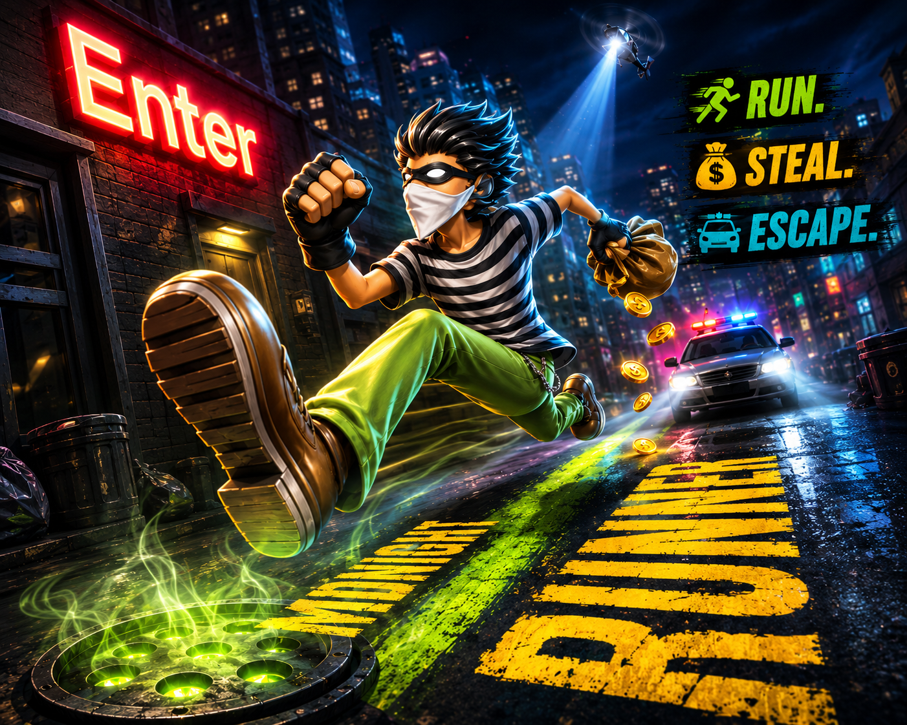
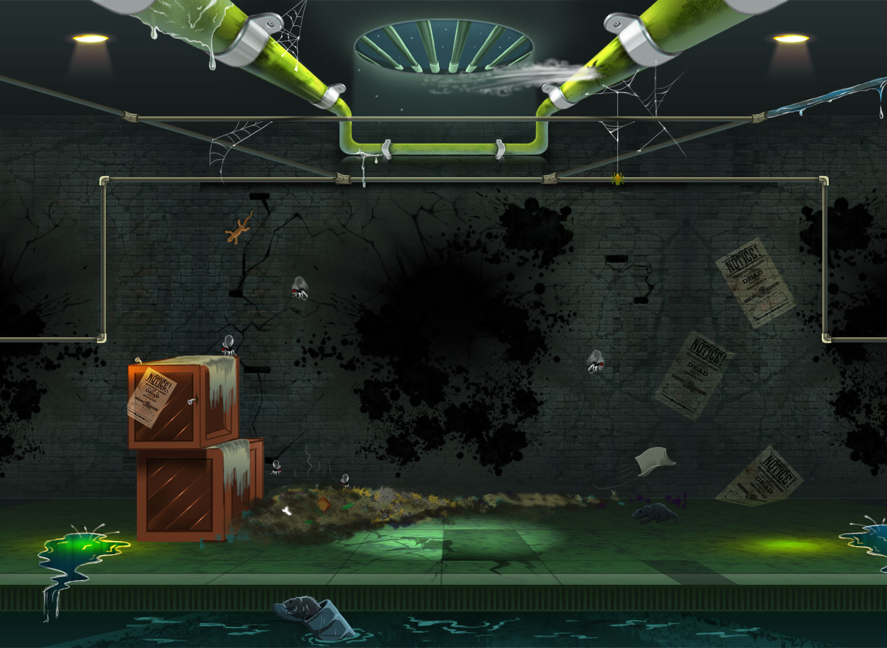
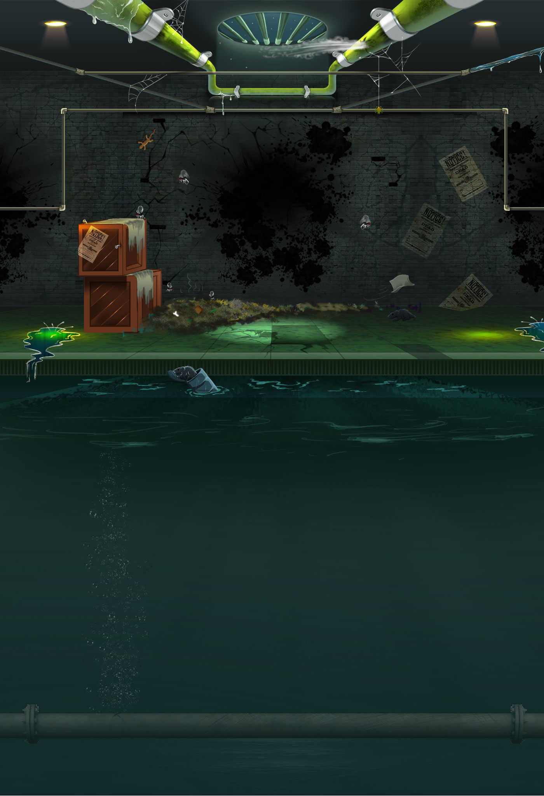
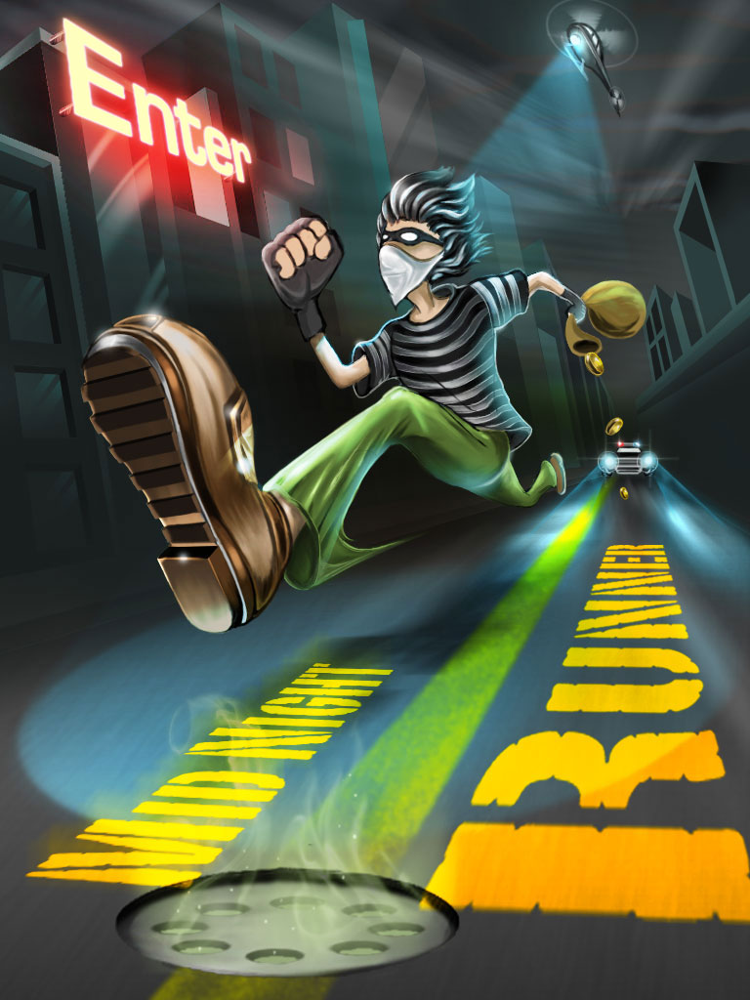
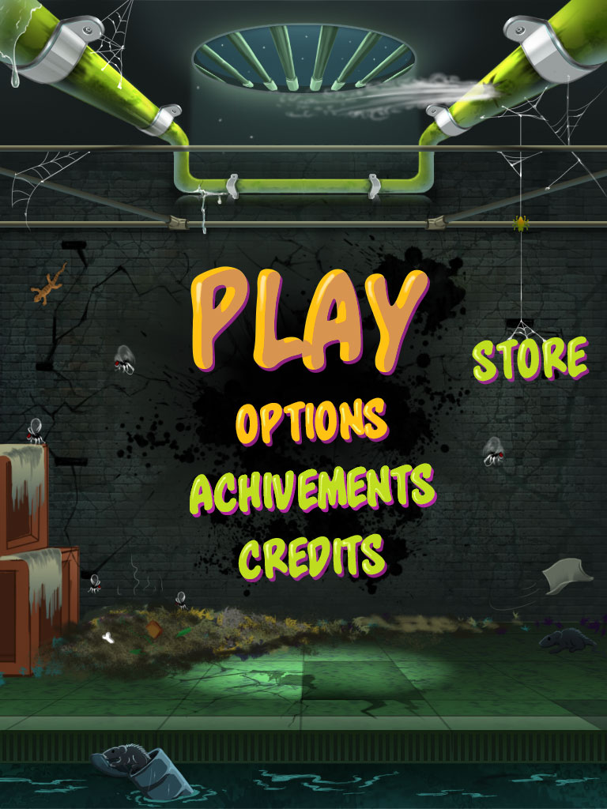
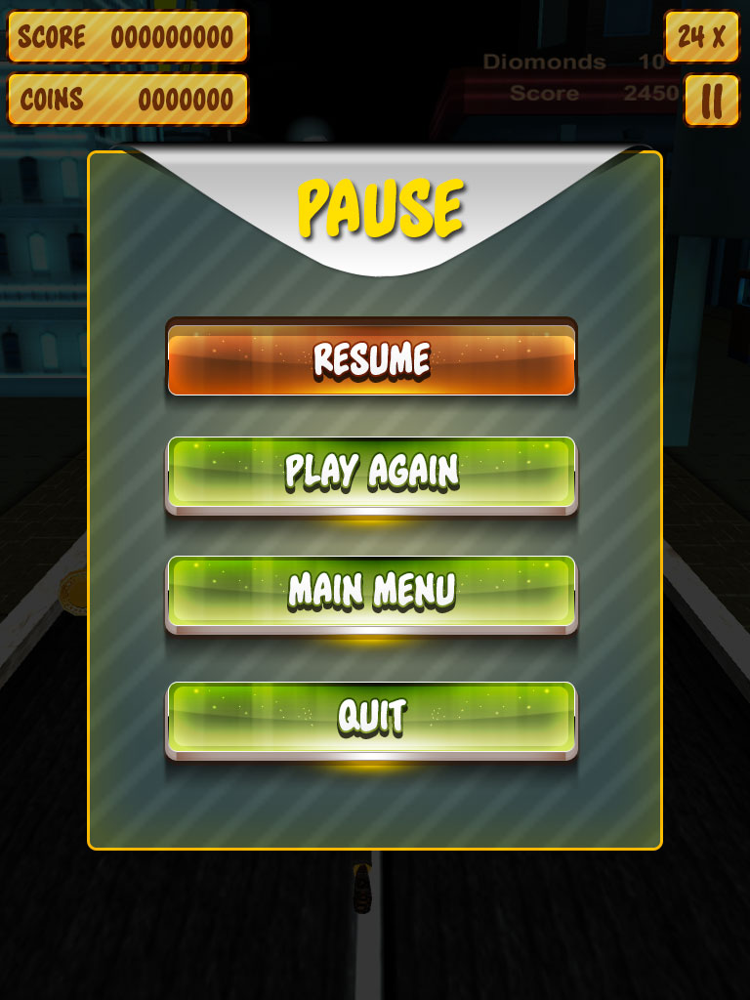
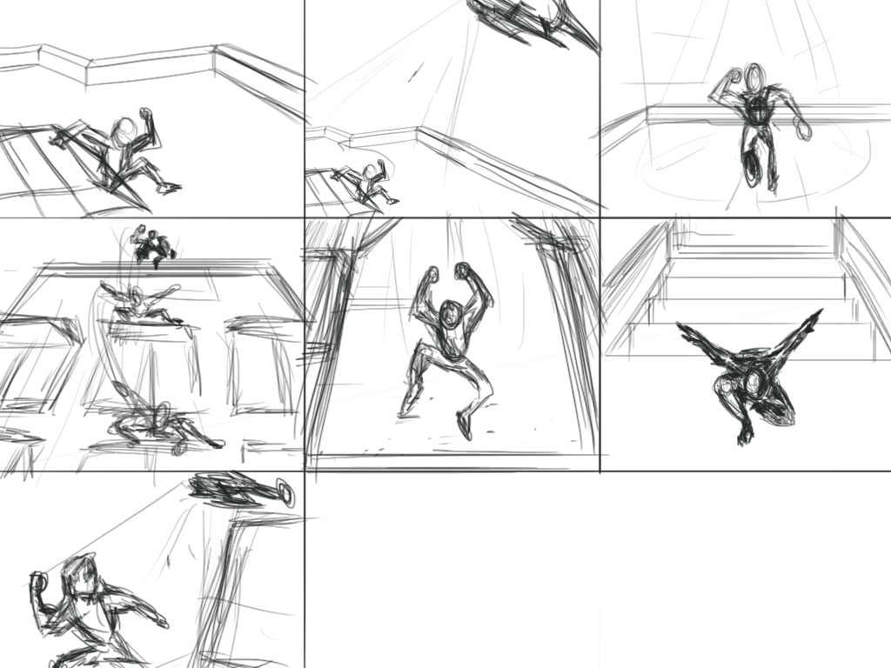
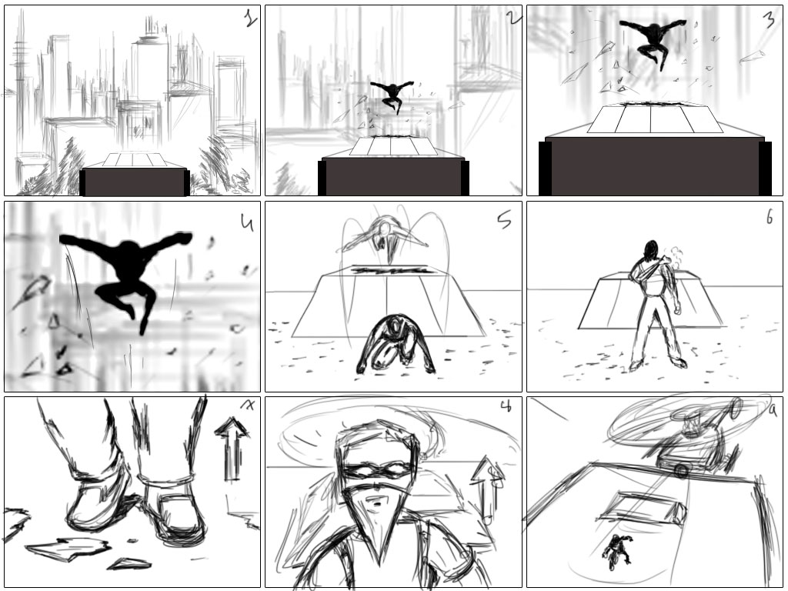
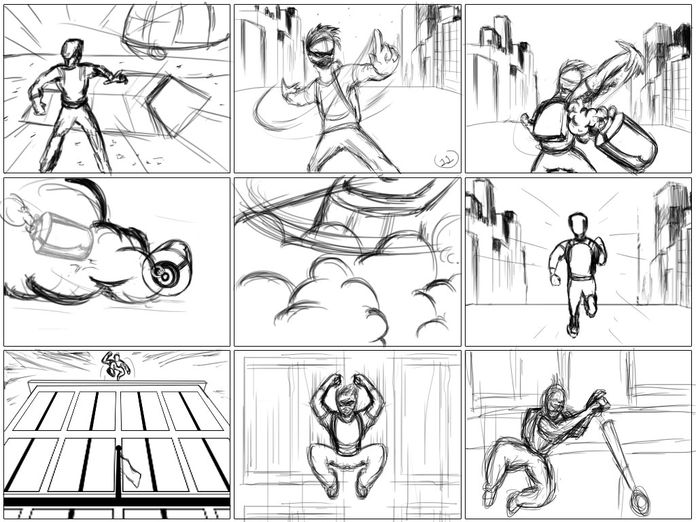

← Back to Portfolio
Midnight
05 · MOBILE RUNNER · UI/UX
Midnight
Runner
A stylized mobile runner game combining interface design, visual development and storyboard exploration.

01 · UI & GAMEPLAY
A visual system for a mobile runner.
Main menu, title, gameplay and pause screens establish the visual direction for the runner experience.





02 · STORYBOARDING
From idea to visual direction.
Storyboards communicate action, composition and gameplay moments before final production.



LET’S CREATE
Need game art support?
Tell us what you're building and which part of the visual pipeline you need help with.
Start a Project ›